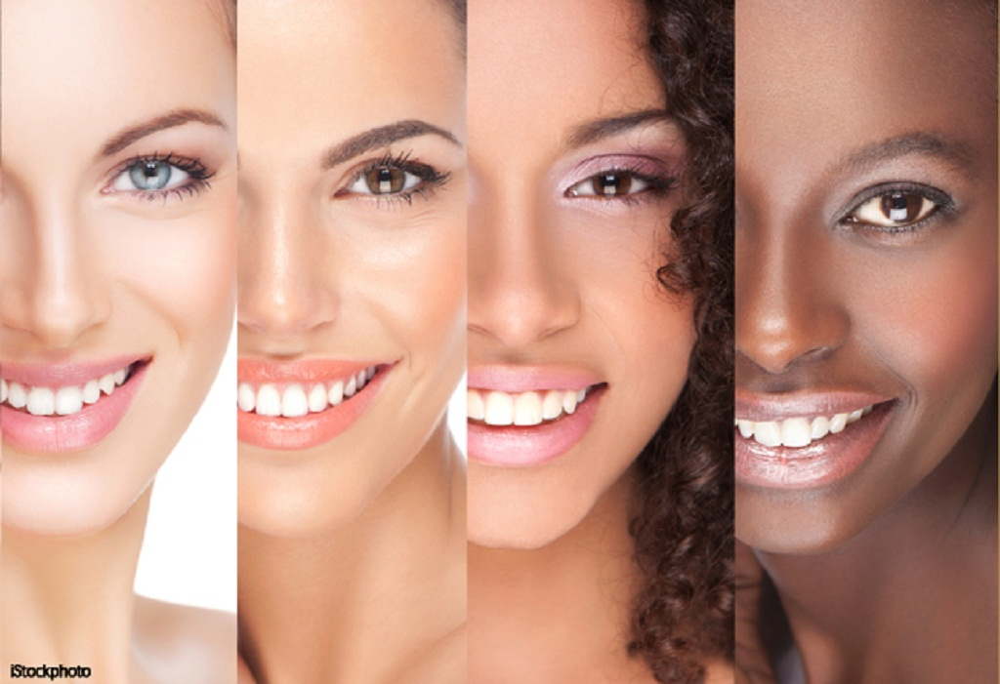
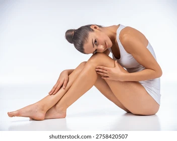
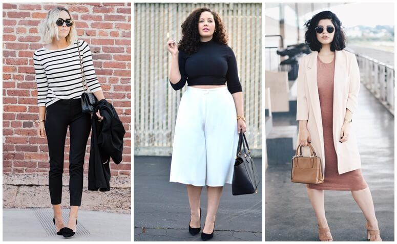
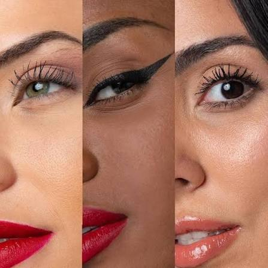

seja bem-vinda
Por: Manoela PratesNessa pagina iremos falar sobre beleza feminina, modos de cuidar da pele, do corpo, modos de se vestir e muitas coisas sobre o mundo da mulher! Aproveite cada postagem.
Aqui compartilhamos o mundo da mulher!
Nessa pagina iremos falar sobre beleza feminina, modos de cuidar da pele, do corpo, modos de se vestir e muitas coisas sobre o mundo da mulher! Aproveite cada postagem.

Cada tipo de pele necessita de um cuidado diferente, produtos diferente, veja alguns cuidados abaixo!


Conheça sua rotinaEscolha roupas que acompanham o seu dia a dia, seja você mais formal ou descontraída.
Aposte em peças curingas:enha itens versáteis como camisa branca, jeans de boa qualidade, blazer e tênis branco.
Use a terceira peça: Adicionar uma jaqueta, um colete ou um cardigã transforma um look básico em uma produção estilosa.
Preste atenção ao caimento: Roupas no tamanho certo valorizam o corpo e evitam a sensação de desleixo.
Equilibre as proporções:Combine peças amplas com outras mais ajustadas ao corpo, como uma calça mais larga com uma blusa justa.
Finalize com acessórios: Cintos, bolsas e bijuterias dão personalidade a qualquer visual simples.

A preparação é a etapa mais importante para a durabilidade da maquiagem
Limpeza:Lave o rosto com um sabonete adequado para remover o excesso de oleosidade.
Hidratação: Use um bom hidratante em todo o rosto e capriche na região abaixo dos olhos. Deixe a pele absorver por 5 minutos antes de começar a pintar.
Primer:Aplique apenas nas áreas com poros mais dilatados ou maior oleosidade (como a zona T), dando leves batidinhas.
Construa camadas finas para obter um acabamento mais natural e sem aspecto pesado.
Aplicação da base: Use o tom exato da sua pele. Aplique com uma esponja úmida dando batidinhas suaves, sem arrastar o produto. Leve o excesso até o pescoço.
Corretivo: Aplique em formato de triângulo invertido nas olheiras para camuflar e iluminar. Para um efeito lifting, aplique um pouco também no canto externo dos olhos puxando para cima.
Blush e Contorno: Aplique o contorno abaixo do osso da maçã do rosto. O blush deve ir no alto das maçãs, esfumando em movimentos circulares para dar um ar de saúde.
Pó translúcido: Retire o acúmulo de base e corretivo das linhas de expressão com a esponja e aplique o pó solto depositando-o abaixo dos olhos e na zona T. Varra o excesso com um pincel gordinho.
Esfumado rápido: Marque o côncavo com uma sombra marrom neutra fazendo movimentos de vai e vem para dar profundidade ao olhar.
Destaque: Aplique uma sombra cintilante ou iluminador com os dedos no centro da pálpebra para iluminar. Finalize com várias camadas de máscara de cílios.
Os detalhes finais que moldam o rosto e completam o visual.
Sobrancelhas:Penteie os fios para cima e preencha as falhas com uma sombra ou gel com cor, seguindo o desenho natural.
Boca perfeita:Contorne os lábios com um lápis de boca de tom nude ou marrom e finalize com um batom ou gloss para criar um efeito degradê volumoso.
Fixação: Borrife uma bruma ou spray fixador ao final de tudo para tirar o aspecto artificial do pó e derreter a maquiagem na pele, aumentando a durabilidade.